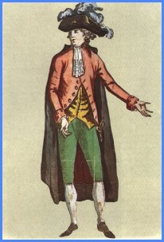
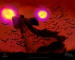
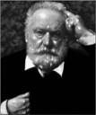

Forums galactiques > Assemblée Galactique : diplomatie officielle > Passage obligé : Présentations
| Xemnas Respect diplomatique : 24  18/05 ETU 17:07 | Score : 0 Détails Xemnas,
Diplomate, homme de parole. J'etais enfoui dans un bunker au moment de la tornade (tempete) electrique... Donc n'ait pas ete affecte... Le seul moyen pour vous d'avoir ma presentation est de suivre mes debats a l'assemblee, je ne revele presque rien sur moi... [HRP] Peut etre que vous apprendrez meme qui je suis (ancien nom) [/HRP] J'espere ne pas avoir faire a un gouvernement... Et lutterai contre toutes les personnes tyranisees par ce gouvernement... Je cherche aussi des commercants pour m'aider dans ma quete. Un seul me suffira (car j'ai besoin d'avoir quelqu'un de confiance), nous feront affaires ensemble, j'expliquerai comment... Xemnas | ||
| Princesse Saurala Respect diplomatique : 156  18/05 ETU 17:30 | Score : 4 Détails Noble Assemblée,
Je suis vos débats depuis plusieurs jours, il est temps pour moi de me déclaré officiellement, Je ne suis autre que la fille de feu le couple princier de la fédération Planétaire de Saural.. J'ai héritier de leur titre, ainsi que de l'entrepise familial multigalactique d'I.B.S Corporation. Vous avez put assister a la déclaration il y a de cela deux jour de notre Directeur de la Fillial I.B.S sécurity Service le Duc Chrys, je remerci celui ci d'ailleurs pour avoir annoncer ma venu. Ainsi je suis l'actionnaire majoritaire de la Corporation, je préside donc le conseil d'amdinistration composé de 7 Directeur que vous aprendrez a connaitre. Sachez que notre flottes commercial imposante sera bientot prete a subvenir a vos besoins, et il me semble important de signaler a vous tous noble diplomate que nous ne pourrons etre tenu responsable de l'utilisation de nos livraison... La corporation ne recherche que le profit, et la création d'accord commerciaux privilégiez, nous resterons neutre devant toute forme de guerre possible, ou intrigue politique, par contre cela ne veux pas dire que vous devez attentez a notre expansion, le Duc Chrys est justement présent pour protégé nos cargaisons et nos entreprots déciminé déjà sur plusieurs planetes de la galaxie. Je laisse le soin a mes collègues de se présentez si ils le souhaitent, bien que notre discrétion assure notre neutralité. Je vous annonce aussi que le conseil d'amdinistration a accepté en vote interne la création d'une nouvelle fillial l'I.B.S Fondation dont je vous parlerais plus en détail trés prochainement, le temps d'installer les locaux et munirs la Fondation de technologie de pointe. Je vous salue tous chaleureusements, Merci | ||
| Omerta Respect diplomatique : 5  18/05 ETU 20:10 | Score : 3 Détails **Un voile sombre, et une impression, rien qu'une impression...pas de souvenirs, aucun mot, aucun bruit....pas de traces, pas d'empreintes, pas de sang...pas d'amour, pas de peur, pas de haine...
...telle serait Omerta...si elle existait...** | ||
| BP69 Respect diplomatique : -2  18/05 ETU 20:34 | Score : -2 Détails Mesdames, Medemoiselles et Messieurs le Prince de Dexterian est fière, heureux, satisfait et comblé de pénétrer enfin sur cette noble univers. Il sera heureux de partager quelques temps votre noble existence.
| ||
| Eddard Respect diplomatique : 13  18/05 ETU 20:50 | Score : -2 Détails Commandants, commandantes.
je viens tout droit de la Galaxie Esperance; Je suis guildien et évidemment interessé par tous les pactes commerciaux possibles, je peut fournir de l'armement ou des mineraux. Mes intentions sont pacifiques et honnetes, c'est pour cela que je me presente devant vous sans aucune honte; | ||
| Demon Of Night Respect diplomatique : 2  18/05 ETU 21:04 | Score : 2 Détails Un homme entra dans la salle , son visage caché dans l'ombre de sa cape ne pouvait étre vu , il s'avanca pour se présenter
" Bonjours Mesdames , Mesdemoiselles et Messieurs , je me présente , commandant Demon Of Night , ayant étais surpris par l'apocalypse inévitable alors que j'étais en patrouille autour de ma planét natal , j'eu un terrible crash sur ma planéte natal , j'étais le seul survivant , il y eut des dégat terrible , la peau de mon visage me fut arraché et le pire , toutes mes flottes et toutes mes planétes furent anéantis , il ne me résté plus que mon natal et quelques vaisseaux , par la méme occasion , mes idéaux ont changé , je ne chercherai plus la guerre sans raison , je reviens vers vous en homme nouveau et je jure devant dieu de respecter chacun de vous quelque soit ses idéaux Je souhaite Bonne chance a chacune pour ce nouveau départ " Et l'homme alla s'asseoir dans son fauteuil | ||
| Céthro Respect diplomatique : 220  18/05 ETU 23:17  | Score : 1 Détails Salut les gars, bah c'est moi :]
J'venais juste foute mon gourdin sur c't'empaffé de Démonofnayt quand j'ai vu qu'on f'sait ses hommages ici. :] J'suis pas rafiné, mais au moins j'sais commander mes planetes! Allez salut les aminches, faut qu'j'ratrape ce salopio qu'a pas attendu 2 heures pour m'agresser... faut qu'j'l'y apprenne a répondre à mes messages diplomatiques avant d'envoyer ses kami sur ma trogne :]]] | ||
| Flouze Respect diplomatique : -2  19/05 ETU 16:13 | Score : -3 Détails *****Un petit homme entra dans la salle, il avait les poches qui débordai de liasses de billets, tout a coup il trèbucha et tomba a terre. Tous le monde pu apercevoir les billets et les pieces sortir de ses poches intérieurs et extérieurs...en se relevant il annonça :
-Salut a tous , je me nomme Flouze et je suis le cousin du commandant DarkFleutin qui a pris sa retraite. Je vous annonce officielement que je compte ouvrir ma "Foire'Flouze" très prochainement.... Je ne veux de mal a personnes enfin sauf a ceux qui toucheront mon argent chéris bien entendus ^^... Après ces mots il resorti de la piece en se retournant pour vérifier qu'il n'avait perdus aucune de ses pieces ***** | ||
| Victor Hugo Respect diplomatique : 4  19/05 ETU 18:12 | Score : 2 Détails Bien le bonjour chers exilés.
Peut-être avez-vous souvent lu ou entendu le nom de mon ancêtre, mais sachez que je ne suis point le même. Néanmoins mes idées équivalent à celles de mon défunt ancêtre. Je suis un commandant serein mais sensé. Je recherche la paix lorsqu'une guerre se proclame. Voila en quelques mots ma description car je suppose qu'elle vous ennuyerait. Veuillez agréer mon humble bonjour, chers exilés. | ||
| Tiz Respect diplomatique : 165  19/05 ETU 21:50 | Score : 6 Détails Alors que les présentations se déroulaient sans la moindre encombre, pendant un léger temps de silence, une bête surgit en plein milieu de l'assemblée.
Peu de personnes ont pu voir clairement son visage car elle allait assez vite. S'arrêtant en plein milieu de l'assemblée, elle étendit son long corps en montrant ses couleurs flamboyantes. Ayant peur pour l'assemblée , quelques gardes ont voulus l'arrêter, mais, sur un coup de stupeur, la bête se mit à parler la langue intergalactique commune. <<" Hé, mais que me voulez-vous donc ? Je ne suis que Tiz ! [...] Ah, oui zut je ne suis pas encore très connu ici... [...] Bon alors je me présente, Tiz, commandant et bête à la fois .Cependant, je ne supporterai pas que l'on me donne le surnom de monstre ! Je suis très susceptible ! A part cela, je ne suis pas pour la guerre, sauf pour protéger mes alliés ou pour la révolution. Mhhhhgrarmh... Voilà je crois m'être globalement présenté... Néanmoins n'ayez pas peur, je ne suis ni lycanthrope, ni vampire, ni méchant... Je vous remercie de m'avoir écouté.">> La bête repartit en bondissant rapidement. | ||
| Ezifiel Respect diplomatique : 5  20/05 ETU 11:52 | Score : 5 Détails *Devant vous se trouve un homme de grande taille, il a un visage assez jeune, d'épaisse mâchoire, et des yeux gris bleu d'une grande intensité. Son visage jeune est à l'opposé de ces cheveux noirs coupés cour parsemés de fil blanc au niveau des tempes. Il possède de larges épaules et une puissant musculature, son coté gauche est recouvert d’une longue cape bleue nuit fixée, par une broche de métal étincelant représentant une étoile, sur son uniforme strict, de la même couleur que ça cape, rehaussée de galons d'argent aux manches et sur la poitrine. Sur son flanc droit se trouve un étui de cuir noir d’où on peut voir dépasser la crosse d'un pistolet et sur le flanc gauche on distingue la poignée d’une rapière de bonne facture peu ornementée, il porte également de longues bottes parfaitement cirées.
Ça façon de ce déplacer montre que c’est un homme habitué a manier les armes blanches, il pose un regard calme et observateur autour de lui notant mentalement tout les petit détail qui pourrait lui être utile. Il a tendance a écouter et a peut prendre la parole mais quand il le fait c’est d’une voix posé et puissante.* "Salutation noble assemblée, je me nomme Ezifiel fils d'Azor Je viens à vous pour me faire connaître en tant que nouveau commandant dirigeant d'Ezia. Mon peuple n'a aucune intention belliqueuse envers vos planètes mais sachez que toute attitude hostile envers nous sera combattue avec ferveur. Sachez aussi que nous sommes ouverts à toutes propositions diplomatiques ou commerciales pour améliorer notre destinée commune. En espérant que nos relations se dérouleront le mieux possible..." *petit hochement de tête en signe de salutation puis l'homme s'en va d'une démarche tranquille sans ce retourner* | ||
| alexandre Respect diplomatique : 17  20/05 ETU 13:38 | Score : 3 Détails Un autre commandant se leva.
Bonjour, je me présente. Alexandre commandant d'un peuple qui veut s'affirmer dans cette galaxie pacifiquement mais mon peuple vous fait savoir qu'en cas d'attaque il ripostera. Mon peuple vous salue et espère qu'aucun tirant ne prendra le pouvoir comme il en a connue dans d'autre galaxie d'ou son arrivé dans cette galaxie. | ||
| Lloyd Respect diplomatique : 4  20/05 ETU 17:34 | Score : 3 Détails Un homme etrenge ressemblant à un enfant entra dans l'assemblé.Il était de petite taille,il avait des vétement rouge sans et il avait deux épées accrocher à sont dos.Il était aussi escorter par plusieur nains,il s'aprocha des autres coùmandant qui le regardait bizarment et commança à parler:"
Je vous salut cher comandant,je me nomme Lloyd,je suis le rois de la terre des nains et je suis un nouveau venu permit vous.J'aimerais savoir si une coaltion aimerais accepter un homme honnete et sincère comme moi. Sur cela je vous laisse." Il repartit exactement comme il était venus. | ||
| RaptorTeak Respect diplomatique : 2 20/05 ETU 18:45 | Score : 2 Détails Un commandant, oublié dans l'ombre, se leva. Il portait un capuchon et se tenait la tête basse, on ne pouvait voir son visage. Il dit, dans une voix saccadée et qui imitait le chuchotement, bien qu'il parlait plutôt fort :
"Bonjour chers commandants et commandantes. Je suis le commandant RaptorTeak, issu de la planète Asgammanth, la planète des reptiles. Je ne vous montrerai pas mon visage, peut-être par honte de vous le montrer, mais peu importe. Je suis ici en tant que représentant de la paix, et je ne souhaite rien de plus que le bonheur et la joie. Je lutte tous les jours contre la criminalité, les guerres, la torture. Mais mon empire s'étend chaque jour, me permettant d'avoir les moyens de le faire. Puissions-nous vivre en harmonie." Sur ce, il se rassit, la tête toujours basse. Il était seul. | ||
| Leorique Respect diplomatique : 387  20/05 ETU 23:41 | Score : 14 Détails <Pensées …>
‘Souffrance … Un mot … n’est ce qu’un mot … ? un seul mot pour décrire ce que je ressent ?… un voile rouge devant ses yeux … ? … une folie qui oscille dangereusement aux limites de la raison … Hum … a moins que cela ne soit plutôt l’inverse … ? ‘ Tourment … un autre mot … tout cela m’est familier … ‘ Leorique soupire légèrement et observe les alentours. Il se rappelle subitement ce qu’il fait la et grimace de dégoût … toutes ces choses politiques … il observe ses mains, fait bouger légèrement ses doigts, songeur. l ‘La souffrance … comme toujours … seule chose qui fait tourner l’univers … Suis je né pour souffrir … ’ Les pensées défilent dans sa tête a tout allure, ‘comme d’habitude … la folie n’est pas loin, si proche mais si lointaine … il n’y retomberais plus … non … plus jamais … plus ça … ’ ‘Bon … allez … en plus … cela me passera le temps je suis sur … ‘ Il sort de ses pensées. Vérifie bien les attaches de son vêtement-armure, ‘pas d’arme … pas besoin pour le moment … dommage … ça aurait pu être amusant … ’. Il attend que son véhicule s’arrête … qu’il puisse sortir pour se présenter a l’assemblée. <entrée …> Un jeune homme entre a l’assemblée, il ne se soucie pas des autres, portant il avance d’une démarche presque féline, du moins, gracieuse et silencieuse … Il ressort de cette démarche une étrange impression de danger …comme si cette démarche pouvait d’un coup se transformer en danse de mort, pourtant aucune arme n’est visible sur le jeune homme. Au fur et a mesure qu’il avance pour se présenter on distingue mieux ses traits, des cheveux étrangement blanc, étrangeté car il semble bien jeune, âgé d’une vingtaine d’année environs. Mais quand il est assez près, il apparaît clairement que c’est un albinos : des cheveux blancs , un visage sans coloration et des yeux de couleur rouge sang ; une impression inquiétante émane de cette personne. Il porte un vêtement étrange, de couleur sombre, du noir allant bien avec son teint blanc et du rouge sombre pareil a la couleur de ses pupilles, et il vous semble que ces vêtements ne sont pas seulement que cela. Il porte un air d’indifférence glaciale qui est son air la plupart du temps , cachant …’ enfin ... non … on ne cache rien s’il n’y a rien a cacher … rien du tout … a part la souffrance peut être … ‘ pense t’il. s’avance donc au centre de la pièce puis s’arrête, il observe avec attention les autres personnes pressentes. « Salutations a tous … Je suis Leorique, de L’Umbrae … je suis ce que vous pourriez appeler un ‘commandant’ même si cela est bien éloigné de ce que je suis … Qu’importe … Je ne pense pas qu’il a besoin de plus … je me doute qu’il y a besoins que je vienne même ici … mais ça n’a aucun importance … ça passe le temps … » et sur ce discours des plus étrange l’albinos va s’asseoir a une place récemment installée. | ||
| revan Respect diplomatique : 25  21/05 ETU 00:50 | Score : 3 Détails Un homme en armure dorée entre dans la salle suivit d'un groupe de soldats.
" Bonjours cher commandants et commandantes; je me nomme revan, Empereur d'une demi douzaine de planetes.Je suis guerrier , et conquerant mais la diplomatie n'est pas une chose que je reni , elle est toujours utile en cas de probleme. Je vais bientot créer une coalition, qui j'espere pourra prosperer, toute demande est la bienvennur." Puis il sortit en laissant derriere lui quelques soldats pour rester en contact avec l'assemblée. | ||
| Buffalo Respect diplomatique : 27  22/05 ETU 20:39 | Score : 6 Détails Buffalo entra dans la salle de l'Assemblée, l'air jovial. Il tenait à la main un petit morceau de papier froissé qu'il venait de retirer de son jean's.
"Salut à tous ! Moi Buffalo, Serviteur des Esprits, j'ai l'honneur d'annoncer la participation de mon peuple, les Buffaliens, à la vie politique de cette g'laxie. Mon peuple saura accepter le principe de l'intérêt général, mais saura aussi dire nan (un conseiller, prudemment resté à l'arrière, s'évanouit lorsqu'il entendit le Serviteur des Esprits, ou son "boss" comme il se nomme lui-même, prononcer ce mot) quand ce qu'on lui proposera sera inepte ou allant à l'encontre de ses besoins vitaux. Dign'té, Equité, Steak haché, voilà ce que réclame mon peuple et ce qu'il ne pourra se résoudre à abandonner." Buffalo se retira, ses santiags imposant le silence en frappant le sol, tandis que de jeunes femmes très légèremment vêtues entraient dans la salle pour distribuer des prospectus vantant les mérites du Grill créé et administré par Buffalo en personne. | ||
| Kirua Respect diplomatique : 0 23/05 ETU 06:59 | Score : 0 Détails Bonjour amis de la galaxie,je vous envoie ce message dans l'espoir que vous veniez me cherche sur ma planète.
Suite a ce message bien reçu par l'assemblée je me dirigea vers cette même assemblée... Quand je fit irruption un membre du conseille s'écria:"IL EST TROP JEUNE!!"...je continua ma route sur cette long et froid carelage. Je fut reçu par un homme d'une extrème sagesse qui avec d'autre hommes accèptere ma candidature au poste de commandant. Je fit mes preuves au tir longue portée,combat raproché,armes intergalactiques,vaisseaux et inventa même un système pour permetre au "kamikaze" de se téléporter en sureté avant le présumé...moment final... Ah oui!Je me nomme Kirua!!jeune commandant!!!^_- | ||
| GrosDodo Respect diplomatique : 65  27/05 ETU 21:42 | Score : 8 Détails GrosDodo,biousnours depuis topujours descendit de son arc en ciel afin de rencontrer tout le ptit monde present dans le coin.cela fesait un moment qu'ils les observaient,il voyait que la bonne humeur regnait ici,alors il decida de se bouger le derriere (pour une fois)et de partir a la rencontre de ce peuple avec sa bonne humeur et ses bisous
bonjour les amis, jme presente, GrosDodo, gros flemmard du pays merveilleux des reves. Je ne descend que tres rarement de mon arc en ciel,qui est mon endroit preferé pour dormir la journée,mais j'aime allez a la rencontre des gens heureux. J'apporte la joie et la bonne humeur dans ce monde de brutes et de guerriers. Sur ce j'ai comme un petit coup de fatigue alors je retourne sur mon arc en ciel merveilleux. bisous et GrosDodo rejoint ses amis grace a son arc en ciel pour allez faire une sieste. | ||
| Pyl Respect diplomatique : 23  29/05 ETU 08:22 | Score : 6 Détails "Un vaisseau volant à plusieurs milliers de kilomètres heure traverse la galaxie, à son bord le commandant de la Fédération Pyl...Le vaisseau à la capital... Il se pose sur une des nombreuses plate-formes, Pyl descend du vaisseau et marche en direction du sénat. Il entre dans celui-ci et va prendre une des places libres, le président du Sénat lui demande de se présenter rapidement"
Pyl: Bonjour à tous ! Je suis le commandant Pyl rattaché à la Fédération. Pour des raisons de sécurités, mon peuple ma interdit de révéler les coordonnées du système dans lequel nous évoluons. J'espère, que nous ferrons de grande avancé en rejoignant ce Sénat... Mais nous n'hésiterons pas à nous séparer de lui si certaine chose ne vont pas. Je crois avoir tout dis. "Sur ce pyl, se rassit" |
Forums galactiques > Assemblée Galactique : diplomatie officielle > Passage obligé : Présentations